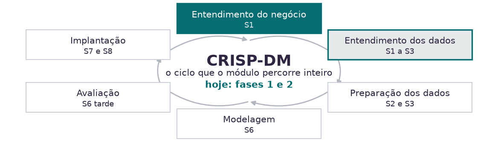
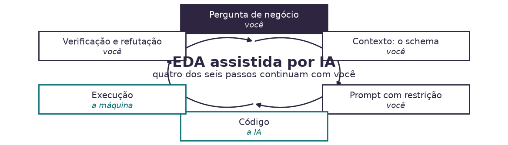

14h00
Resgate da manhã e a regra da casa
14h15
EDA quando a IA executa, e a primeira prática
14h50
A escada de prompt sobre dado
15h45
Anatomia do teste falseável e o caderno de hipóteses
16h30
O rótulo que não existe no sistema
17h15
Amarração com a Aula 02 e com a entrega
Cada grupo saiu com um backlog de hipóteses sobre o que explica a deterioração das contas da Kovan, e uma posição preliminar sobre Caminho A ou Caminho B.
Uma hipótese, pelo critério da manhã, é clara, mensurável e falsificável.
A pergunta desta tarde
O painel tem 16.618 linhas e nenhuma coluna de risco.
Como cada uma dessas hipóteses vira evidência até as 17h30?
A IA que descreve o dado
Lê uma amostra do arquivo e completa o resto por plausibilidade. Devolve um número com a mesma confiança, exista ele ou não.
Rápida, conversacional, não auditável.
A IA que escreve o código que mede o dado
Produz uma instrução que roda sobre as 16.618 linhas. O número sai da execução, não do modelo.
Auditável: dá para ler o código e discordar dele.

CRISP-DM é o vocabulário comum entre quem pede o modelo e quem o constrói. As duas primeiras fases não são preâmbulo: na Kovan elas consomem 6 das 26 semanas da janela.
Pergunta
Decidir o que medir. Continua com você.
Recorte e medida
Escrever e rodar o código. Aqui o custo caiu para perto de zero.
Refutação
Decidir se o número derruba a hipótese. Continua com você.
A IA colapsou o custo de executar, não o de decidir o que medir.
Consequência prática: pergunta ruim agora é respondida rápido e errado.

A IA escreve o código e a máquina o executa. Decidir o que medir e decidir se o número derruba a hipótese não saem da sua mão.
- Abra o notebook da aula no Colab e rode a célula que carrega o painel.
- Peça à IA, sem nenhuma estrutura: analise este arquivo e diga o que há de interessante.
- Agora peça: qual a margem média por conta no segmento estratégico?
- Se você recebeu um número, encontre a coluna de onde ele saiu.
Você pediu a margem média por conta e recebeu R$ 412 mil. O painel não tem coluna de margem. O que aconteceu?
Nível 0
Analise e diga o que achar. Saída descritiva, genérica, sem recorte.
Nível 1 · CREATE
Papel, pedido, exemplos, ajustes, formato, extras. O mesmo da manhã.
Nível 2
Estrutura na entrada e na saída: as colunas, o recorte, o formato da tabela.
Nível 3
Postura adversarial: o que refutaria este achado.
Nível 0
analise este arquivo e diga
o que há de interessanteVolta um resumo de colunas, três observações genéricas e nenhum recorte. Descrição não é análise.
Nível 2
Você é analista de revenue
analytics da Kovan LATAM.
Use o DataFrame `painel`, colunas:
conta_id, trimestre, segmento,
receita_brl, status_conta.
Devolva o código pandas que compara
2025 contra 2024 no segmento
estratégico, por conta, em faixas
de variação.
Se faltar informação, diga que
falta. Não estime.Volta o código. O número sai da execução, e o recorte foi decisão sua.

Nenhuma dessas falhas chega com cara de erro. Todas chegam com cara de resposta boa.
Em texto, preencher a lacuna é o serviço que você contratou.
Em análise, preencher a lacuna é o defeito. Por isso a restrição entra explícita, em todo prompt, a partir de agora.
Use apenas colunas que existem
no DataFrame `painel`.
Se faltar alguma informação para
responder, diga que falta,
em vez de estimar.
Devolva o código, não o resultado.- Escreva o prompt de nível 2 para a pergunta: a queda de receita do segmento estratégico está concentrada ou é uniforme?
- Peça o código. Rode no notebook. O número sai de lá.
- Suba para o nível 3: peça três explicações alternativas para o padrão que você achou, e qual coluna testaria cada uma.
- Compare o seu recorte com o da mesa ao lado antes do intervalo.
Variável
Qual coluna do painel carrega o sinal.
Operação
O que se calcula sobre ela, e sobre quais grupos.
Janela
Quais trimestres entram, e por quê os outros ficam de fora.
Critério de refutação
Qual resultado derruba a hipótese, escrito antes de rodar. Sem esta linha, o que você tem é uma opinião com número em cima, e a análise vira busca por confirmação.

Cada folha nasce de um ramo do indicador e nomeia a coluna que a testa.
Rentabilidade
Não há custo nem margem. Nenhuma hipótese sobre lucro por conta é testável aqui.
Engajamento completo
Visitas e interações existem para parte da base, e a cobertura não é uniforme entre segmentos.
Causa da intervenção
Não há registro de quem recebeu plano de intervenção. Efeito de ação comercial não se mede nesta base.
Insuficiente é um veredito legítimo, e vai aparecer no caderno de vocês.
Dizer que o dado não responde é resultado. Inventar que responde é o que a Kovan já fez uma vez.
- Pegue três hipóteses do backlog que o seu grupo escreveu de manhã.
- Preencha as seis linhas do registro para cada uma, no notebook.
- Em pelo menos uma, use o nível 3: peça à IA que derrube o seu próprio achado antes de você fechar o veredito.
- Exporte o caderno. Ele é a entrega de hoje e a matéria-prima do Artefato 1.
Qual destas está pronta para virar código?
Caminho A · Sinal de Ruptura
O rótulo existe no sistema: zero pedidos faturados em dois trimestres consecutivos.
Binário, verificável, derivável hoje à tarde.
Caminho B · Erosão Silenciosa
O rótulo não existe. Alguém precisa decidir o que conta como contração relevante.
E essa decisão define o resultado antes do primeiro treinamento.
| Critério | A pergunta que ele faz | Caminho A | Caminho B |
|---|---|---|---|
| Observabilidade | o rótulo existe no sistema? | existe | precisa ser construído |
| Prevalência | há eventos suficientes para treinar? | 34 eventos, 24 efetivos | 176 episódios |
| Antecedência | o sinal acende a tempo de agir? | depois da decisão do cliente | com o relacionamento aberto |
| Acionabilidade | a fila cabe na capacidade? | 6 a 10 por trimestre | 120 a 190, teto de 138 |
| Verificabilidade | dá para auditar se acertou? | direta | depende do limiar escolhido |
Nenhum caminho vence nos cinco. A escolha é qual critério a Kovan aceita perder.

As duas caíram, a que caiu mais foi a que voltou. Se a magnitude não separa, o que separa?
- Peça à IA: crie uma coluna de churn neste dataset. Leia o código. Qual critério ela escolheu, e ela avisou que estava escolhendo?
- Agora construa o rótulo do Caminho A e conte as rupturas do segmento estratégico nos 14 trimestres.
- Compare o seu número com o do grupo ao lado.
- Se derem diferente, o problema não é de código. É de decisão. Ache qual.
Duas mesas contaram rupturas com o mesmo critério e chegaram a números diferentes. Qual a explicação mais provável?
Hoje fica pronto
O caderno de hipóteses com veredito, e o painel carregado e conferido.
A Aula 02 pega
As advertências de qualidade do painel: foi uma delas que separou a contagem das mesas.
A semana 5 recebe
O Artefato 1: Análise de Segmentação Estratégica e Personas Data-Driven.
A manhã de 15/08 continua a discussão de alvo com o Rafael.
A tarde de 15/08 trata o dado que hoje produziu números divergentes.
1. Kovan Technologies LATAM: A Definição do Alvo. Business Case do Módulo 2, referência PL-02-2026, versão v2. Caderno de Exhibits, Exhibits 1 a 5.
2. Wirth, R. e Hipp, J. CRISP-DM: Towards a Standard Process Model for Data Mining, 2000.
3. Tukey, J. W. Exploratory Data Analysis. Addison-Wesley, 1977.
4. Conn, C. e Sarrazin, H. Issue Tree e MECE. McKinsey, 2019. Autoestudo citado na manhã.
5. Courtney, H., Kirkland, J. e Viguerie, P. Strategy Under Uncertainty. Harvard Business Review, 1997.
6. Donaire, R. Inteligência de Mercado e Modelagem Preditiva. Aula 01, manhã, 08/08/2026. Estrutura CREATE e vieses do HIPPO.
7. Os cinco critérios de escolha de alvo são construção deste módulo a partir das restrições do case, não framework publicado.